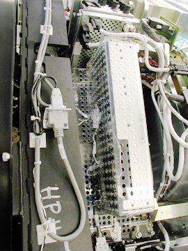

Operating Documentation
Direction 5193855-800, Rev# 4
LS 5.X RT Ltd. Access Service Information Adv
Operating Documentation |
| Required Persons | Preliminary Reqs | Procedure | Finalization |
|---|---|---|---|
| 1 | Timing Not Applicable | Timing Not Applicable |
Replace faulty power supply and adjust voltage as necessary:
Remove gantry side and top covers.
Tilt gantry back 30 degrees and rotate to access DAS power supplies.
Disable gantry 120 vac power.
Remove the -5 vdc power supply.
Remove safety shields and disconnect power supply harnesses.
Replace failed power supply.
Adjust voltages as necessary.
| NOTE: | The two (2) -12 VDC power supplies are located behind the right DAS chassis, below the - 5 vdc analog power supply (see Illustration 1). The - 5vdc analog power supply must be removed to replace either -12 vdc power supply. |
Illustration 1: Two - 12 vdc power supplies under the - 5 vdc power supply

| Item | Qty | Effectivity | Part# | Manufacturer | |
|---|---|---|---|---|---|
| Torque wrench | 1 | - | - | - | |
| Item | Qty | Effectivity | Part# | Manufacturer |
|---|---|---|---|---|
| Tie-wraps | AR | - | - | - |
| Item | Qty | Effectivity | Part# | Manufacturer | |
|---|---|---|---|---|---|
| DAS 12 volt power supply | 1 | - | - | - | |
| ELECTROCUTION HAZARD. | |
| HIGH VOLTAGE PRESENT. | |
| USE PROPER LOCKOUT/TAGOUT PROCEDURES BEFORE REPLACING COMPONENTS. |
| CRUSH HAZARD. | |
| UNEXPECTED GANTRY ROTATION CAN CAUSE SERIOUS INJURY. | |
| NEVER SERVICE THE GANTRY WITH THE AXIAL DRIVE ENABLED. |
| Condition | Reference | Eff |
|---|---|---|
Remove DAS -5 vdc power supply. Refer to MDAS -5 Volt Analog Power Supply Replacement. | - | - |
Position the table to its lowest position.
Remove gantry right and left side covers.
Remove gantry top covers.
Tilt gantry back 30 degrees.
| Always turn OFF the HVDC before the 120 VAC. Turning OFF 120 VAC power before HVDC power can result in equipment damage. | |
Turn OFF Axial Enable, HVDC, and 120VAC switches on the Service Switch panel.
Rotate gantry to access DAS power supplies.
Disconnect the rotating power harness as required. Save all hardware for reuse.
| Burn Hazard. | |
| Power Supply may be hot to touch. | |
| Use caution to prevent possible burn injury from hot surface contact. |
Remove the - 5 vdc analog power supply.
Remove the four (4) 6mm cap screws, flat and lock washers, to remove the clear plastic cover.
Disconnect the AC and DC connectors from the power supply.
Remove the four (4) 6mm hex nuts, flat and lock washers that hold the power supply in place.
Lift the power supply assembly off of the threaded rod.
Slide the new power supply onto the threaded rod, and secure with the 6mm hex nuts, flat and lock washers. Set torque to:
| 5.8 lb.-ft. | 7.9 N-m | 69.9 lb.-in | 80.5 kg-cm |
| NOTE: | If the inner slave power supply is being replaced, you need to perform the power supply adjustment procedure before you reassemble the DAS power supplies. |
Reconnect the AC and DC connectors.
Replace the clear plastic cover, using the four (4) 6mm cap screws, flat and lock washers. Set torque on screws to:
| 5.8 lb.-ft. | 7.9 N-m | 69.9 lb.-in | 80.5 kg-cm |
| POTENTIAL FOR SHOCK | |
| VOLTAGE IS PRESENT. | |
| FAILURE TO USE AN INSULATED VOLTAGE ADJUSTMENT “TWEAKER” CAN RESULT IN PERSONAL INJURY AND/OR COMPONENT DAMAGE. |
Adjust supply output as necessary.